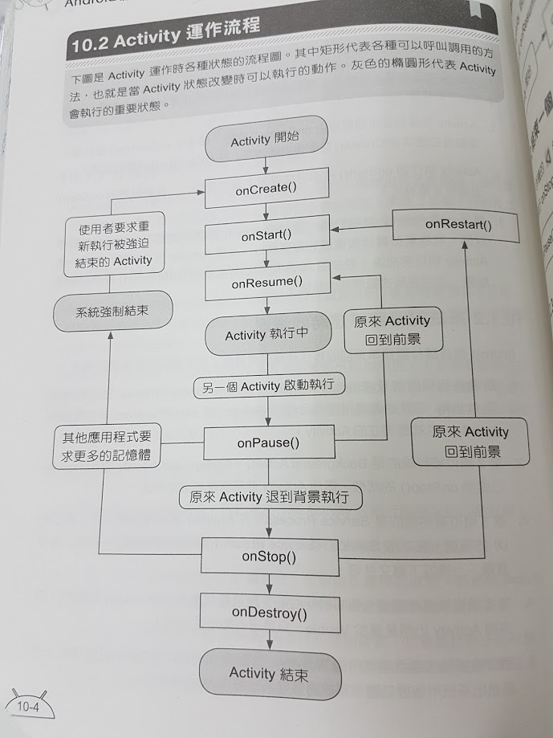
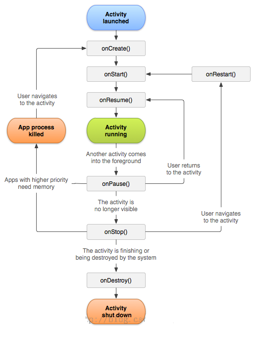

Activity 狀態變化流程，參考第十章


簡單的總結幾個動作:
onCreate()用來做程式的初使化動作;
onDestory()通常都拿來把onCreate()時的資料做釋放的動作;
onPause()時把需要保存的資料保存;
onResume()把保存的資料拿回來使用.
再歸納一般 Android Application遵循的動作流程：
一般啟動:
onCreate -> onStart -> onResume
啟動一個 Activity 的基本流程是: 分配資源給這個 Activity(onCreate),
然後將 Activity 內容顯示到螢幕上(onStart), 在一切就緒後, 取得螢幕的控制權(onResume),
使用者可以開始使用這個程式。
呼叫另一個 Activity:
onPause(1) -> onCreate(2) -> onStart(2) - onResume(2) -> onStop(1)
先凍結原本的 Activity, 再交出直接存取螢幕能力(onPause )的過程. 直到 Activity 2 完成一般啟動流程後, Activity 1 才會被停止.
回復原 Activity
onPause(2) -> onRestart(1) -> onStart(1) -> onResume(1) -> onStop(2) -> onDestroy(2)
按 Back鍵可以回到原本的 Activity。
退出/結束
onPause -> onStop -> onDestroy
如果程式中有直接呼叫 finish 函式來關閉 Activity的話, 系統會暫停(Pause), 停止(Stop)然後銷毀(Destroy)。
回收後再啟動
onCreate -> onStart -> onResume
被回收掉的 Activity 一旦又重新被呼叫時，會像一般啟動一樣再次呼叫 Activity 的 onCreate 函式.
播放音樂
public MediaPlayer player=new MediaPlayer();
player = MediaPlayer.create(getApplicationContext(), R.raw.music);
player.setLooping(true); // 循環播放
player.start(); // 音樂播放
player.pause(); // 音樂播放暫停
player.start(); // 音樂繼續播放
player.release(); // 釋放
標準的機制通常 (參考課本pg.10-18)
將要儲存的動作寫在 onPause()方法中
回復狀態的動作寫在onResume()
移除資源寫在onDestroy()
SharedPreferences 的使用方式, 課本 pg.12-8
宣告
SharedPreferences sp;
建立物件 onCreate
sp=getSharedPreferences("myData", MODE_PRIVATE);
寫入資料可以放在onPause
sp.edit().putString("name","蘇建郡") => 寫入資料name
.putInt("age",30) => 寫入資料age
.commit();
讀出資料可以放在onResume
String name= sp.getString("name","no data"); =>讀出資料name
int age = sp.getInt("age",0); => 讀出資料 age